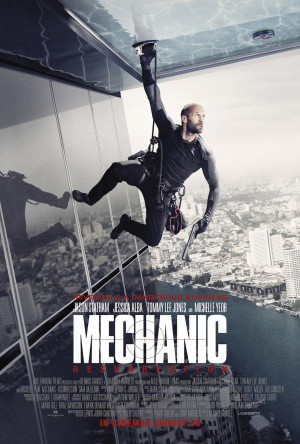

#5035 The Mechanic 2: Resurrection
 gesehen am 05.01.2017
gesehen am 05.01.2017
 
 IMDB-Wertung: 5.6 / 10
IMDB-Wertung: 5.6 / 10  Metascore: 0
Metascore: 0 
Arthur Bishop will sich zur Ruhe setzen. Der letzte Anschlag auf sein Leben, dem er nur knapp entkam, brachte ihn zum nachdenken. Doch jetzt, wo er es etwas langsamer angehen will, wird seine Freundin entführt und er wird gezwungen 3 Mordaufträge anzunehmen. Nun muss Bishop also erneut zur Waffe greifen, um die Liebe seines Lebens zu retten.
Jahr: 2016
Dauer: 99 Minuten
FSK: 16
Land: Frankreich Studio: UFATonspuren: DTS - ,
Untertitel: Deutsch, Englisch,
Auflösung: 1080p (1920x808) Größe: 5160 MB
Genre: Action, Thriller, Krimi
Regisseur: Dennis Gansel
Drehbuch: Margery Sharp
Soundtrack:
Darsteller:
 Jason Statham als Arthur Bishop
Jason Statham als Arthur Bishop Jessica Alba als Gina
Jessica Alba als Gina Tommy Lee Jones als Max Adams
Tommy Lee Jones als Max Adams Michelle Yeoh als Mei
Michelle Yeoh als Mei Sam Hazeldine als Crain
Sam Hazeldine als Crain John Cenatiempo als Jeremy
John Cenatiempo als Jeremy- Toby Eddington als Adrian Cook
- Femi Elufowoju Jr. als Krill
- Anteo Quintavalle als Frank
- Yayaying Rhatha Phongam als Courier
 Bonnie Zellerbach als Headmistress
Bonnie Zellerbach als Headmistress Andrew Stehlin als Rio Thug #5
Andrew Stehlin als Rio Thug #5- Allan Poppleton als Dice Prisoner
 Vithaya Pansringarm als Prison Warden
Vithaya Pansringarm als Prison Warden- Rachel O'Meara als Leasing Agent
- Aaron Brumfield als Adam's Head of Security
- Damian Mavis als Adam's Guard
- Tony Arunah Abbey als Cook's Interview Reporter
 Peter Rnic als Pilot
Peter Rnic als Pilot Eoin O'Brien als Merc #1
Eoin O'Brien als Merc #1- Natalie Burn als BBC Reporter
 Tomer Oz als Adam's Guard
Tomer Oz als Adam's Guard- Dylan Farrell als Young Bisop , uncredited
- Geoffrey Giuliano als The Man , uncredited
 Raicho Vasilev als Crain's Guard 1 , uncredited
Raicho Vasilev als Crain's Guard 1 , uncredited- Stuart Thorp als Rio Thug #1
- Alex Kuzelicki als Rio Thug #2
- Brahim Achabbakhe als Rio Thug #3
- Thomas Kiwi als Rio Thug #4
- Francis Tonkala Tamouya als Slender Psycho, Nuujib
- Tais Rodrigues Dias als Hang Glider
- Lynette Emond als Sexy Thai Assistant
- Maethi Thapthimthong als Young Contruction Worker
- Soji Ikai als Skinny Prisoner
- Chatchawai Kamonsakpitak als Prison Guard
 Atanas Srebrev als Trawler Captain
Atanas Srebrev als Trawler Captain- Yothin Udomsanti als Deckhand
- Valentin Velkov als Tearful Employee
- Amir Zargham als Pier Worker
- Alexander Winters als Merc #2
- Armin Parvin als Merc #3
- Yuri Chuchenko als Varna Cop
- Hare Das Ahatefu als Krill's Guard , uncredited
- Anika Krav als Cafe Customer , uncredited
- Viktor Krav als Cafe Customer , uncredited
- Markus Waldow als Hotel Concierge , uncredited
Datei: X:\FSK18-Collections\Mechanic\Mechanic 2 Resurrection, The (2016, FSK16, 1920x808).mkv seit 21.12.2016
Festplatte: FSK18
 Alle Filme aus Gruppe 'FSK18-Collections\Mechanic'
Alle Filme aus Gruppe 'FSK18-Collections\Mechanic'